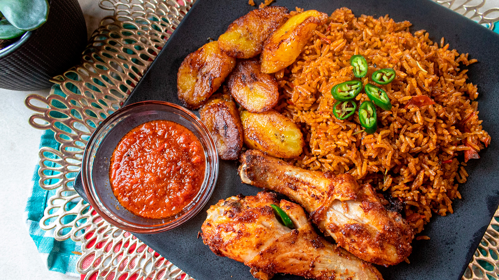
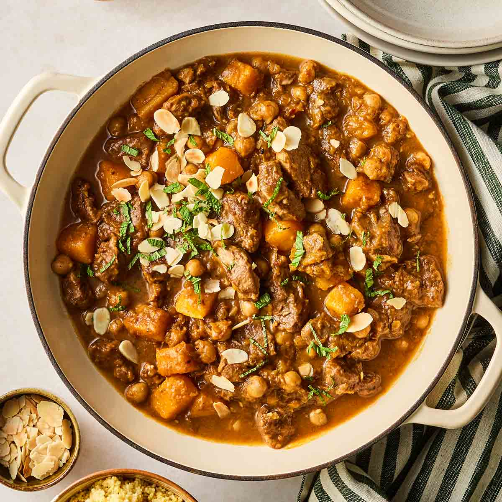
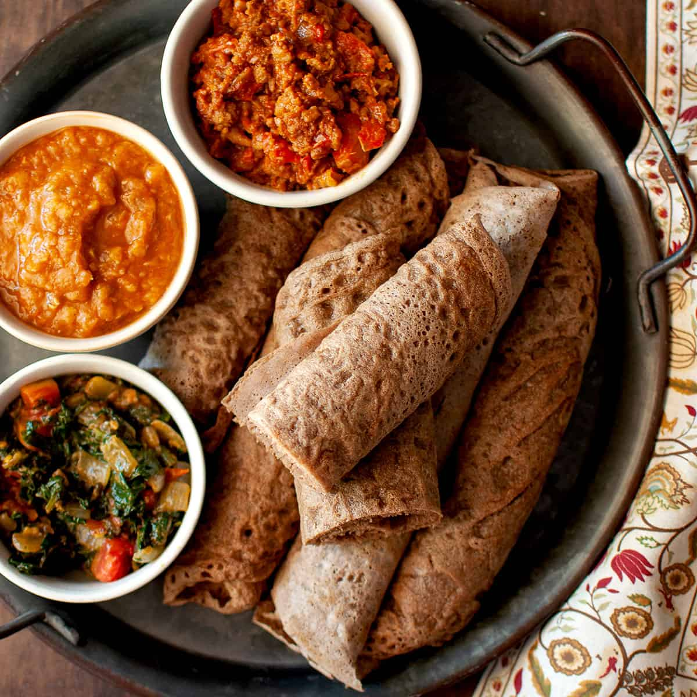
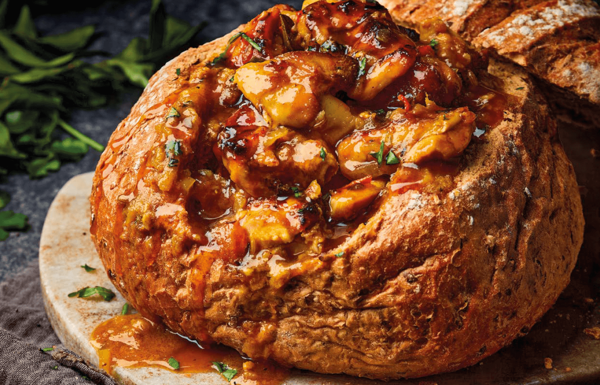
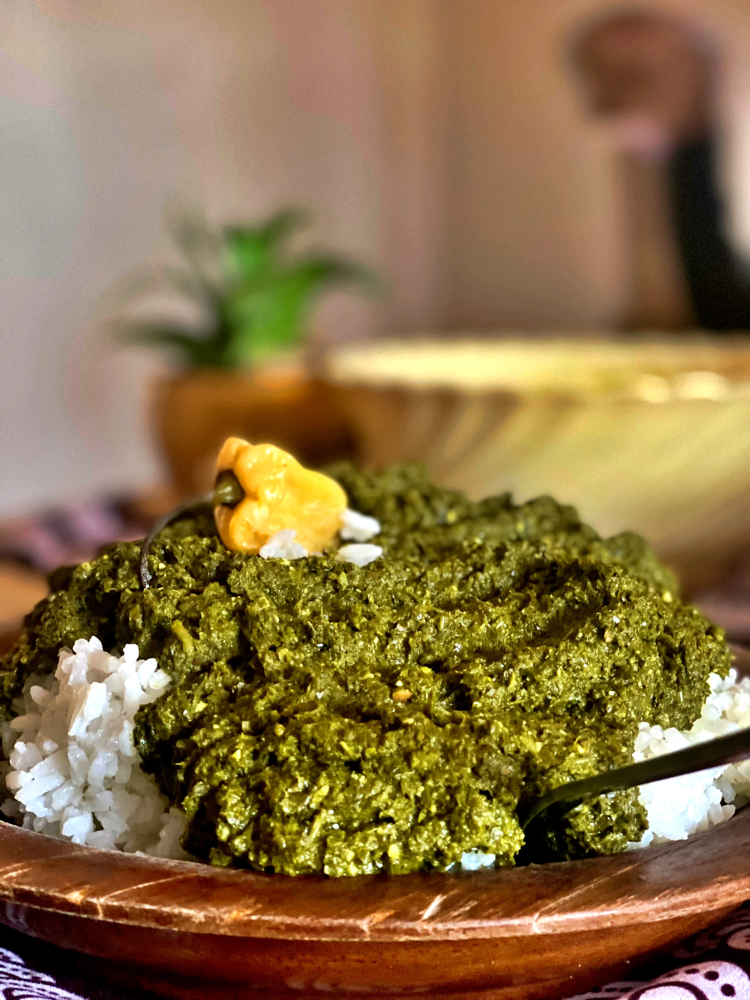

Recipe Collection
Explore authentic recipes from across the African continent. Filter by region to discover dishes from your favorite culinary zone.

West Africa⏱ 65 minMedium
Ghanaian/Nigerian Jollof Rice
A vibrant one-pot rice dish cooked in a rich tomato and pepper sauce.

North Africa⏱ 2.5 hrsHard
Moroccan Lamb & Apricot Tagine
A slow-cooked stew of tender lamb, sweet apricots, and warm spices.

East Africa⏱ 2 hrsHard
Ethiopian Injera & Doro Wat
A spongy teff flatbread served with a spicy chicken stew.

Southern Africa⏱ 55 minMedium
South African Durban Bunny Chow
A hollowed loaf of white bread filled with spicy Indian-inspired curry.

Central Africa⏱ 1.5 hrsMedium
Rwandan Isombe
Pounded cassava leaves cooked in a rich peanut sauce.